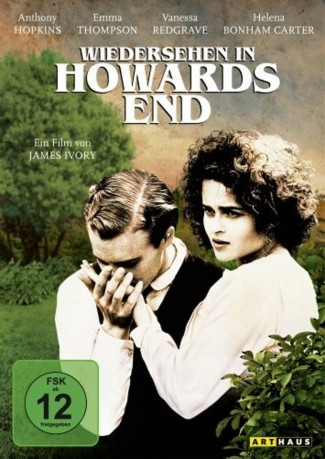
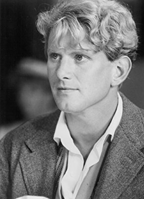
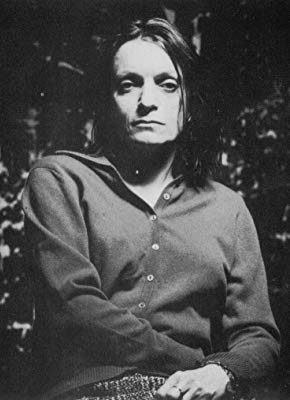

#8332 Wiedersehen in Howards End
Alternativ: Howards End
 
 IMDB-Wertung: 7.5 / 10
IMDB-Wertung: 7.5 / 10  Metascore: 0
Metascore: 0 
England im viktorianischen Zeitalter: Die adlige Ruth Wilcox verbindet eine enge Freundschaft mit der um Jahre jüngeren Margaret Schlegel aus bürgerlichem Hause. Ruths Angehörige beäugen die Verbundenheit der Frauen kritisch. Als Ruth stirbt, erwartet die Familie eine Überraschung: Margaret erbt ganz allein den Familienbesitz Howards End.
Jahr: 1992
Dauer: 142 Minuten
FSK: 6
Land: England Studio: Arthaus FilmverleihTonspuren: DTS - ,
Untertitel:
Auflösung: 1080p (1920x800) Größe: 8990 MB
Genre: Drama, Liebe
Regisseur: James Ivory
Drehbuch: E.M. Forster
Soundtrack: Richard Robbins
Darsteller:
 Vanessa Redgrave als Ruth Wilcox
Vanessa Redgrave als Ruth Wilcox Helena Bonham Carter als Helen Schlegel
Helena Bonham Carter als Helen Schlegel Emma Thompson als Margaret Schlegel
Emma Thompson als Margaret Schlegel Prunella Scales als Aunt Juley
Prunella Scales als Aunt Juley- Jo Kendall als Annie
 Anthony Hopkins als Henry Wilcox
Anthony Hopkins als Henry Wilcox-  James Wilby als Charles Wilcox
- Jemma Redgrave als Evie Wilcox
 Samuel West als Leonard Bast
Samuel West als Leonard Bast- Susie Lindeman als Dolly Wilcox
- Nicola Duffett als Jacky Bast
 Mark Tandy als Luncheon Guests
Mark Tandy als Luncheon Guests-  Anne Lambton als Luncheon Guests
 Barbara Hicks als Miss Avery
Barbara Hicks als Miss Avery- Crispin Bonham-Carter als Albert Fussell
- Barr Heckstall-Smith als Helen's Child
- Robin Johnson als Lecture Attendee (uncredited)
- Joseph Bennett als Paul Wilcox
- Adrian Ross Magenty als Tibby Schlegel
- Ian Latimer als Station Master
- Mary Nash als Pianist
- Siegbert Prawer als Man Asking a Question
- Andrew St. Clair als Luncheon Guests
- Emma Godfrey als Luncheon Guests
- Duncan Brown als Luncheon Guests
- Iain Kelly als Luncheon Guests
- Atalanta White als Maid at Howards End
 Gerald Paris als Porphyrion Supervisor
Gerald Paris als Porphyrion Supervisor- Allie Byrne als Blue-stockings
- Sally Geoghegan als Blue-stockings
- Paula Stockbridge als Blue-stockings
- Bridget Duvall als Blue-stockings
- Lucy Freeman als Blue-stockings
- Harriet Stewart als Blue-stockings
- Tina Leslie als Blue-stockings
- Mark Payton als Percy Cahill
- David Delaney als Simpson's Carver
- Mary McWilliams als Wilcox Baby
- Rodney Rymell als Chauffeur
- Luke Parry als Tom, the Farmer's Boy
- Antony Gilding als Bank Supervisor
 Peter Cellier als Colonel Fussell
Peter Cellier als Colonel Fussell- Patricia Lawrence als Wedding Guests
- Margery Mason als Wedding Guests
- Jim Bowden als Martlett
- Alan James als Porphyrion Chief Clerk
- Jocelyn Cobb als Telegraph Operator
- Peter Darling als Doctor
- Terence Sach als Delivery Man
- Brian Lipson als Police Inspector
Datei: X:\1992\Wiedersehen in Howards End (1992, FSK6, 1920x800).mkv seit 24.02.2018
Festplatte: HD 1992-1995
 Es gibt insgesamt 57 Filme in der Gruppe '1992'
Es gibt insgesamt 57 Filme in der Gruppe '1992'